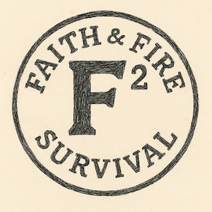

What the Bible Says About Preparedness
Exploring scripture and how preparedness aligns with faith-driven responsibility and wisdom.
Read More →
Insights and studies on faith, preparedness, and survival skills.
Request TrainingExploring scripture and how preparedness aligns with faith-driven responsibility and wisdom.
Read More →Five scriptural principles that build resilience, courage, and clarity during crisis situations.
Read More →Why spiritual discipline and faith are foundational for making wise decisions under pressure.
Read More →